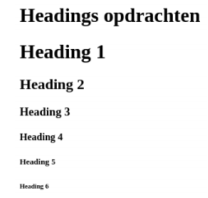

Headers
Het gebruik van headers is belangrijk voor zoekmachines en de gebruikers van je website.
- 11. Onderzoek en leg uit waarom headers zowel belangrijk zijn voor zoekmachines als voor de gebruikers.
- 12. Onderzoek hoe je een text-header aanmaakt en reproduceer het volgende resultaat:

Paragrafen
- 13.Onderzoek wat een paragraaf tag is en hoe hij gebruikt wordt. Geef hier een voorbeeld bij.
- 14.Onderzoek en leg het verschil tussen het stoppen van alle tekst in één paragraaf tag, en het opsplitsen van de tekst in meerdere tags uit.
- 15.Reproduceer het volgende resultaat door gebruik te maken van text-headers en de paragraaf tags.
- 16.Voeg een Horizontal rule toe en reproduceer het volgende resultaat.
- 17.
- 17. Voeg een link tag toe en reproduceer het volgende resultaat in de footer. odra een gebruiker op de link klikt wordt de pagina weergegeven in de huidige browser window. Door gebruik te maken van attributen kan de link geopend worden in bijvoorbeeld een nieuw tabblad. Voorbeelden van HTML attributen zijn bijvoorbeeld een image tag die een “alt” attribuut heeft.
- 18. Onderzoek welke 4 attributen een link tag kan hebben, leg uit wat deze doen en voeg deze als voorbeeld toe op je website.